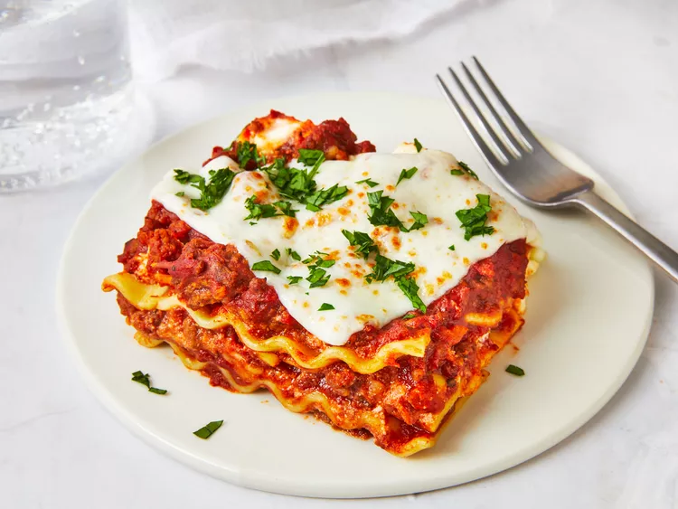

Index
Lasagna

You know the feeling: Your energy is running low, your family's hunger is running high, and dinner should have been on the table an hour ago. That's when you reach for this easy lasagna recipe.
We tasked our recipe pros with finding ingredients and shortcuts that cut down on the work of putting this lasagna together but don't sacrifice any of the flavor.
Browning the ground beef, perhaps the longest task besides baking, takes just 5 to 7 minutes. Once all the sauce ingredients are added to the beef, you'll only need to simmer a few minutes, not hours like the typical lasagna recipe.
Ingredients
- Ground beef
- Canned tomatoes
- Sauce ingredients
- No-boil noodles
- Cheeses
Steps
- Preheat the oven to 350°F
- Heat the oil in a large skillet over medium heat. Cook the ground beef, stirring to crumble, until browned, 5 to 7 minutes. Drain off the fat.
- To the skillet of ground beef, add the tomatoes, tomato paste, Italian seasoning, salt, black pepper, red pepper flakes, and garlic powder. Simmer for 5 minutes.
- Place half of noodles in a lightly greased 12- x 8- x 2-inch baking dish, slightly overlapping lengthwise edges. Spoon one-third of the meat mixture over the noodles; add half of the shredded mozzarella, ricotta or cottage cheese, and Parmesan cheeses. Repeat layers, and spoon on the remaining meat mixture. Arrange the mozzarella slices on top. Cover the baking dish with foil. Bake at 350°F for 35 to 45 minutes. Remove the foil, and continue to bake for an additional 10 minutes.
- Let the finished dish rest for 10 minutes before serving. Top with chopped parsley, if desired.